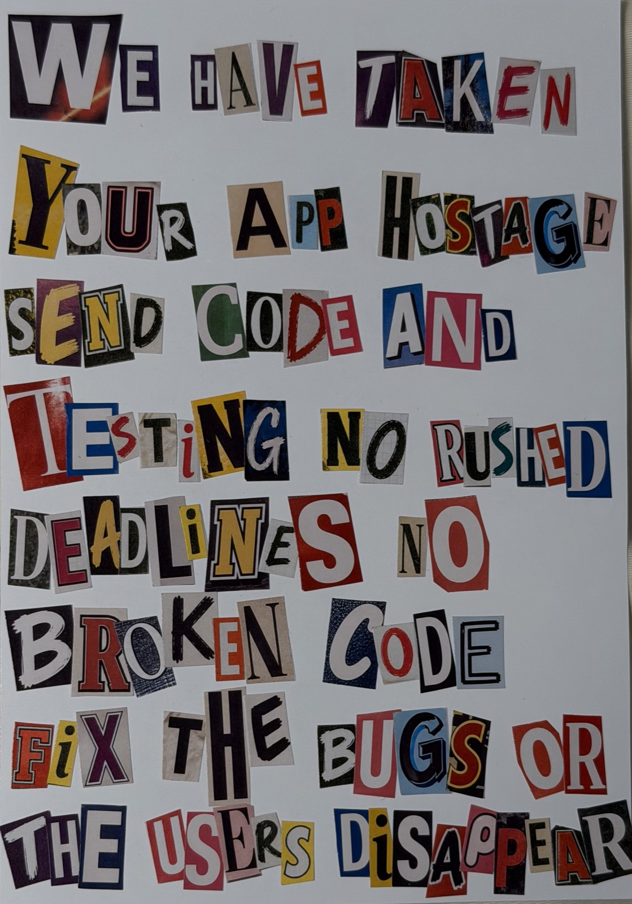

Ransom Note
A visual warning about what happens when bad development, bad testing, and impossible deadlines take over an app.
Reflection
My ransom note says, “We have taken your app hostage. Send code and testing. No rushed deadlines, no broken code. Fix the bugs, or the users disappear.” Inside the note, the person speaking is angry about an app ruined by bad development. The message of the note is to show the importance of well-written code, proper testing, and well-paced deadlines in the development process. I chose words like “hostage” and “disappear” to make the note more dramatic while still conveying the message I originally intended. One challenge I had during the process of making this project was figuring out how to write this in a way that would be bearable for me to cut out, while still being able to display the message I wanted. I learned while doing this part of the project that visual style can drastically change a simple message into something much more.
